1. Random Walks: The First Generative System#
Today we write our first generative system: a handful of Python lines that wander across the canvas by chance and leave behind a drawing that nobody, including us, has planned in advance.
Today’s destination#
By the end of this chapter you will be able to generate the image below yourself: a reconstruction of Georg Nees’ Schotter (“gravel”, 1968–70), one of the most famous works of early computer art. Notice how it moves from perfect order at the top to disorder at the bottom. That gradient is produced by exactly one idea, controlled randomness, and you will program it from scratch today.
# display this chapter's showpiece (generated by the last cell of this notebook)
import os
import matplotlib.pyplot as plt
import matplotlib.image as mpimg
showpiece_path = "../assets/outputs/ch01_showpiece.png"
if os.path.exists(showpiece_path):
image = mpimg.imread(showpiece_path)
plt.figure(figsize=(5, 9))
plt.imshow(image)
plt.axis("off")
plt.show()
else:
print("Not generated yet -- run the whole notebook once and come back.")
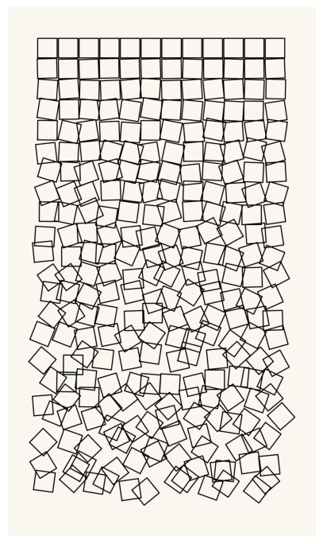
Context: the artist as system designer#
In 1967, Sol LeWitt wrote a sentence that could serve as the motto of this whole course (LeWitt 1967): “The idea becomes a machine that makes the art.” From 1968 on, his wall drawings existed primarily as written instructions (“ten thousand lines about 10 inches long, covering the wall evenly”), executed by assistants, differently at every site (MASS MoCA, Wall Drawing 86; Paula Cooper Gallery, artist page). The artwork is not the wall; it is the system that produces walls. Whoever designs a system and lets it run has already, in an important sense, made generative art, no computer required.
At almost the same moment, computers entered the picture. In February 1965, the mathematician Georg Nees showed algorithmic drawings at the Studiengalerie of the TH Stuttgart, widely counted as the first exhibition of computer art (Nake 2009). His best-known work, Schotter (1968–70), is a grid of squares that dissolves from strict order into tumbling chaos as your eye moves down the page: a program in ALGOL, a random number generator, and a flatbed plotter (Victoria and Albert Museum, collection entry). When Nees was asked at that first exhibition whether he could make his machine draw the way an artist does, he reportedly answered (Nake 2009) that he could, if you tell me how the artist draws. The provocation still stings, and we will return to it in chapter 27.
The third figure to remember is Vera Molnár (1924–2023), who from 1959 worked with what she called the machine imaginaire: she executed algorithms by hand, step by step, years before she got access to an actual computer in 1968 (DAM, artist entry). Her point was radical for a painter trained in composition: replacing intuitive choice with a rule-plus-chance procedure was not a loss of authorship but a sharper instrument for it: the rule is the composition.
What unites LeWitt’s instructions, Nees’ plotter, and Molnár’s imaginary machine? The theorist Philip Galanter’s much-quoted definition (2003): generative art is any practice where the artist cedes control to a system that acts with some degree of autonomy, contributing to or resulting in the finished work. Today you build your first such system. It will be modest, a walker taking random steps, but it already contains everything: a rule, a dose of chance, and a result that surprises its own author.
A recipe that rolls dice#
An algorithm (Algorithmus) is nothing more than a precise recipe: a finite list of steps that a machine can follow without asking questions. LeWitt’s wall drawing instructions are algorithms for humans; today we write them for Python.
Our recipes need one special ingredient: randomness. A computer cannot actually roll dice: it produces pseudo-random numbers, generated by a deterministic formula that is designed to look statistically random. That subtle cheat will turn out to be a gift for artists (a “random” artwork we can reproduce exactly!), and we will exploit it properly in the next chapter. For now, let’s just get some random numbers.
# ask Python for three random numbers between 0 and 1
import random
print(random.random())
print(random.random())
print(random.random())
0.5325587794967415
0.8289450362219999
0.8454236336288986
Run the cell above a second time (click it, then press Shift+Enter): you get different numbers. Every call to random.random() draws a fresh value between 0 and 1. Making chance repeatable is the next chapter’s topic, but the drawing cells below already use the trick quietly, in their random.seed(...) line, so that your images come out exactly like the ones in this notebook. Change or delete that line whenever you want a one-of-a-kind run.
The canvas: coordinates#
Before we can draw, we need to know where things go. Matplotlib, the drawing library we use throughout the book, places points on an (x, y) coordinate system: x runs to the right, y runs up, exactly like in school mathematics. (Careful: digital images traditionally count y downwards from the top-left corner. We will meet that convention in chapter 8; today, y goes up.)
Remember the course convention from chapter 0: when a plot is a diagram the axes stay visible, because the numbers matter; when it is an artwork they go off (plt.axis("off")), because a picture of a random walk does not need a ruler. You will see both today, and from the first palette piece onward the artworks sit, as always, on the soft paper-white ground PAPER.
# three labeled points on the coordinate system -- axes ON, this is a diagram
plt.figure(figsize=(5, 5))
plt.scatter([0, 2, 3], [0, 1, 3], s=60, color="black")
plt.text(0.1, 0.1, "(0, 0)")
plt.text(2.1, 1.1, "(2, 1)")
plt.text(3.1, 3.1, "(3, 3)")
plt.xlim(-1, 4)
plt.ylim(-1, 4)
plt.grid(True)
plt.gca().set_aspect("equal")
plt.title("the canvas: x goes right, y goes up")
plt.show()
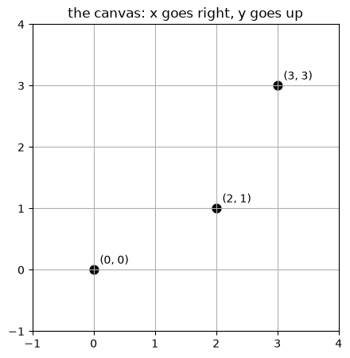
Build-up#
We assemble the system piece by piece, from parts you know from chapter 0: a loop collecting random numbers, then random points on the canvas, then the walk itself.
# a for-loop (chapter 0) -- here: five random step lengths
random.seed(101)
for i in range(5):
value = random.random()
print("step", i, "->", value)
step 0 -> 0.5811521325045647
step 1 -> 0.1947544955341367
step 2 -> 0.9652511070611112
step 3 -> 0.9239764016767943
step 4 -> 0.46713867819697397
Now a loop collects random coordinates in two lists, xs and ys (chapter 0’s append at work), and matplotlib scatters them onto the canvas in one go.
Try it: run the cell, then change 200 to 2000 and run it again.
# scatter 200 random points -- our first image made of chance
random.seed(7) # fixes the chance sequence, so we all see the same points
xs = []
ys = []
for i in range(200):
xs.append(random.random())
ys.append(random.random())
plt.figure(figsize=(5, 5))
plt.scatter(xs, ys, s=10, color="black")
plt.gca().set_aspect("equal")
plt.title("200 random points")
plt.show()
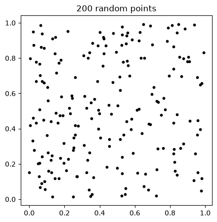
The random walk#
Scattered points have no memory: each one ignores all the others. A random walk (Irrfahrt) is different: a walker starts somewhere and takes one random step at a time, so every position depends on the entire history before it. We give the walker four possible moves (up, down, right, left) and let random.choice pick one per step. Connecting the positions with a line makes the path visible. Each move is a tuple (dx, dy), and dx, dy = random.choice(directions) unpacks the chosen one (chapter 0).
Try it: after running the cell, change the seed or the number of steps and run it again; every walk is one of a kind.
# a random walk: start at (0, 0), take 2000 random steps, draw the path
directions = [(0, 1), (0, -1), (1, 0), (-1, 0)] # up, down, right, left
random.seed(23)
x = 0
y = 0
xs = [x]
ys = [y]
for i in range(2000):
dx, dy = random.choice(directions)
x = x + dx
y = y + dy
xs.append(x)
ys.append(y)
plt.figure(figsize=(6, 6))
plt.plot(xs, ys, linewidth=0.8, color="black")
plt.gca().set_aspect("equal")
plt.axis("off") # this is artwork now, not a diagram
plt.show()
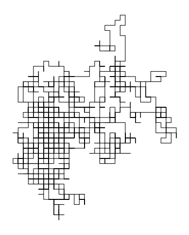
Many walkers, and a first palette#
One walker draws a tangle; several walkers in different colors draw a composition. Color choices matter enormously in this course, so we bring back the named palettes of the course package agap, exactly as in chapter 0; palette[w % len(palette)] cycles through the colors with the modulo clock.
Try it: in the second cell below, swap "kelly" for any other palette name the first cell prints.
# make the course helper package importable, then look at the palettes
import sys
sys.path.append("..")
from agap.helpers import PALETTES, PAPER, save_artwork
print("available palettes:", list(PALETTES.keys()))
print("bauhaus =", PALETTES["bauhaus"])
available palettes: ['bauhaus', 'rothko_dark', 'pastel', 'monochrome', 'viridis', 'magma', 'kelly']
bauhaus = ['#D02433', '#1B4B9B', '#F7C523', '#1A1A1A', '#F2EFE9']
# five walks in one figure, each in its own palette color
palette = PALETTES["kelly"]
random.seed(5)
plt.figure(figsize=(6, 6), facecolor=PAPER)
for w in range(5):
x = 0
y = 0
xs = [x]
ys = [y]
for i in range(1500):
dx, dy = random.choice(directions)
x = x + dx
y = y + dy
xs.append(x)
ys.append(y)
# alpha= sets transparency (0 clear, 1 solid); no relation to the angle alpha ahead
plt.plot(xs, ys, linewidth=0.8, color=palette[w % len(palette)], alpha=0.8)
plt.gca().set_aspect("equal")
plt.axis("off")
plt.show()
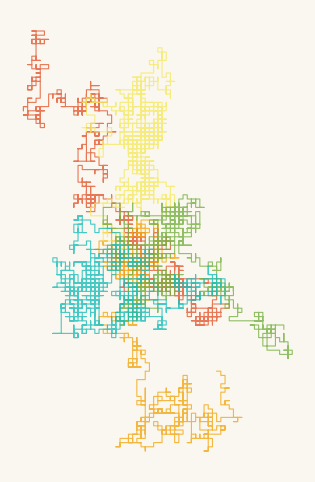
Reconstructing Schotter#
Now for the showpiece. Nees’ Schotter is a grid of 12 × 22 squares. In the top row, every square sits perfectly in place. With every row further down, two doses of randomness grow stronger: each square gets a random rotation and a random displacement away from its grid position. Order does not break; it erodes.
Try it: once the grid two cells below has drawn itself, raise max_rotation or max_shift and run it again. At what values does the grid stop being a grid?
To rotate a square we need a little trigonometry: a corner at position (px, py) relative to the square’s center moves to
for a rotation by the angle \(\alpha\). Don’t memorize this; watch what it does in the test cell below, and trust it. (We will meet rotation properly in chapter 3.)
# corners of a square centered at (cx, cy), rotated by angle (in radians)
import math
def square_corners(cx, cy, size, angle):
corners_x = []
corners_y = []
half = size / 2
base = [(-half, -half), (half, -half), (half, half), (-half, half), (-half, -half)]
for px, py in base:
rx = px * math.cos(angle) - py * math.sin(angle)
ry = px * math.sin(angle) + py * math.cos(angle)
corners_x.append(cx + rx)
corners_y.append(cy + ry)
return corners_x, corners_y
# test: the same square rotated by 0, 0.2 and 0.7 radians -- axes ON, diagram
plt.figure(figsize=(7, 3))
for position, angle in [(0, 0.0), (1, 0.2), (2, 0.7)]:
xs, ys = square_corners(position * 1.5, 0, 1.0, angle)
plt.plot(xs, ys, color="black")
plt.text(position * 1.5 - 0.4, -1.0, f"angle = {angle}")
plt.gca().set_aspect("equal")
plt.ylim(-1.3, 1.0)
plt.title("one square, three rotations")
plt.show()
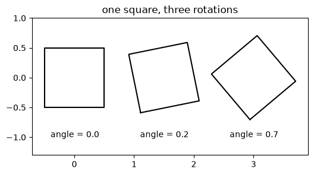
# Schotter: order at the top, disorder at the bottom
# random.uniform(-1, 1) draws a value anywhere between -1 and 1
random.seed(1968)
rows = 22
cols = 12
max_rotation = 1.2 # radians of tilt, reached in the last row
max_shift = 0.45 # displacement in cell units, reached in the last row
square_size = 0.94 # squares slightly smaller than one grid cell
plt.figure(figsize=(5, 9), facecolor=PAPER)
for row in range(rows):
disorder = row / (rows - 1) # 0.0 in the top row, 1.0 in the last
for col in range(cols):
angle = random.uniform(-1, 1) * disorder * max_rotation
cx = col + random.uniform(-1, 1) * disorder * max_shift
cy = -row + random.uniform(-1, 1) * disorder * max_shift
xs, ys = square_corners(cx, cy, square_size, angle)
plt.plot(xs, ys, color="black", linewidth=1.0)
plt.gca().set_aspect("equal")
plt.axis("off")
plt.show()
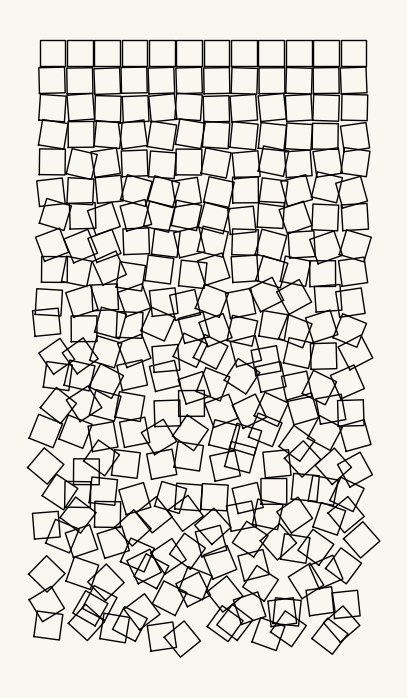
Playground#
Time to make the systems yours. Below, both generators are wrapped into functions whose parameters are all in one place: the number of walkers, the step count, the palette, the amount of disorder. Each function also takes a seed, the artwork’s serial number: same seed, same artwork (chapter 2 explains why; change it freely). And the name=value pairs in the def lines are default values, chapter 0’s trick: call random_walk_art() with no arguments and you get all of them.
# the finished walk generator: every parameter in one place
def random_walk_art(n_walkers=5, n_steps=1500, palette_name="kelly", seed=1):
directions = [(0, 1), (0, -1), (1, 0), (-1, 0)]
palette = PALETTES[palette_name]
random.seed(seed)
fig = plt.figure(figsize=(6, 6), facecolor=PAPER)
for w in range(n_walkers):
x = 0
y = 0
xs = [x]
ys = [y]
for i in range(n_steps):
dx, dy = random.choice(directions)
x = x + dx
y = y + dy
xs.append(x)
ys.append(y)
plt.plot(xs, ys, linewidth=0.8, color=palette[w % len(palette)], alpha=0.8)
plt.gca().set_aspect("equal")
plt.axis("off")
plt.show()
return fig
# the finished Schotter generator
def schotter(rows=22, cols=12, max_rotation=1.2, max_shift=0.45,
square_size=0.94, cell_inches=0.42, seed=1968):
random.seed(seed)
fig = plt.figure(figsize=(cols * cell_inches, rows * cell_inches), facecolor=PAPER)
for row in range(rows):
disorder = row / (rows - 1)
for col in range(cols):
angle = random.uniform(-1, 1) * disorder * max_rotation
cx = col + random.uniform(-1, 1) * disorder * max_shift
cy = -row + random.uniform(-1, 1) * disorder * max_shift
xs, ys = square_corners(cx, cy, square_size, angle)
plt.plot(xs, ys, color="black", linewidth=1.0)
plt.gca().set_aspect("equal")
plt.axis("off")
plt.show()
return fig
# four variations -- compare them before reading the question below
art_1 = random_walk_art(n_walkers=3, n_steps=4000, palette_name="monochrome", seed=3)
art_2 = random_walk_art(n_walkers=12, n_steps=600, palette_name="pastel", seed=9)
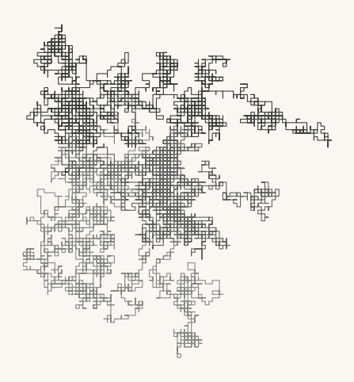
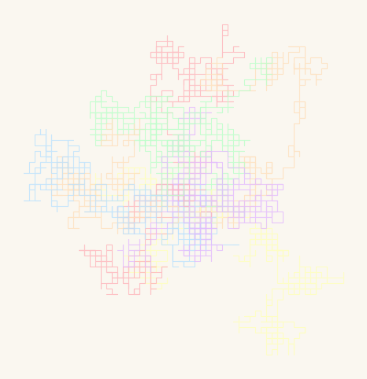
art_3 = schotter(rows=22, cols=12, max_rotation=0.3, max_shift=0.1, seed=7)
art_4 = schotter(rows=22, cols=12, max_rotation=3.0, max_shift=1.0, seed=7)
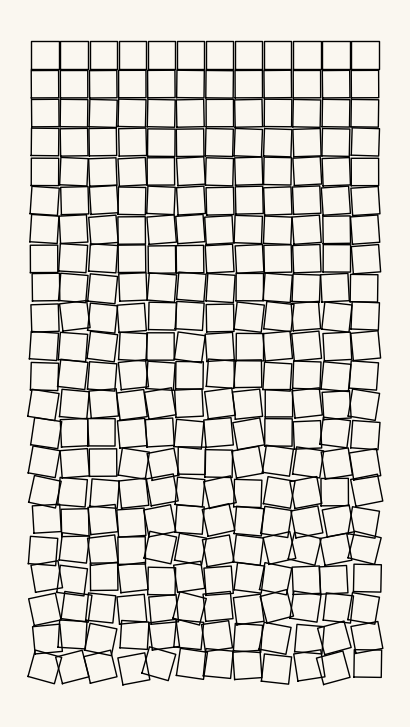
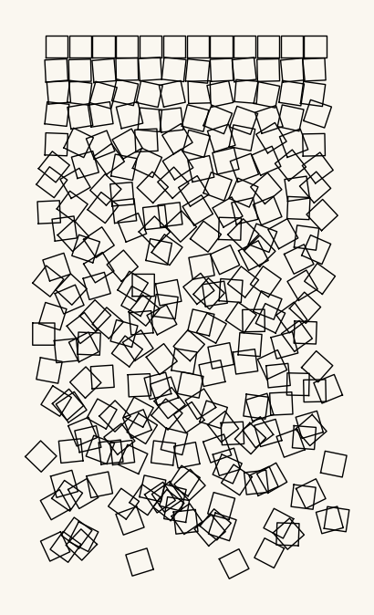
Look and compare. Which of the four images feels calmest, which feels most violent? For the two Schotter variants: both use the same random sequence (seed=7), so every difference you see comes from max_rotation and max_shift alone. At which point does the grid stop reading as a grid? Is the original’s charm perhaps precisely that it stops just before that point?
Export your artwork#
Pick your favorite parameters, put your name in the cell below, and run it. The image lands in assets/outputs/ at print quality; this folder becomes your personal gallery over the course of the book.
# save YOUR artwork: adjust parameters, replace 'yourname', run the cell
my_artwork = schotter(rows=22, cols=12, max_rotation=1.2, max_shift=0.45, seed=42)
saved_path = save_artwork(my_artwork, "yourname", chapter=1)
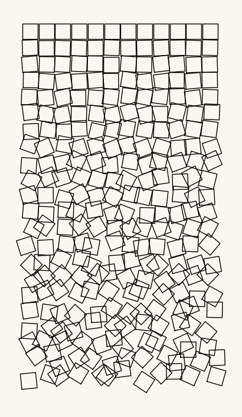
saved: assets/outputs/ch01_yourname.png
Exercises#
(a) Parameter exploration: the drifting walker. random.choice(directions) treats all four directions equally. Use random.choices(directions, weights=[1, 1, 3, 1])[0] (note the plural and the final [0]: random.choices returns a list of picks, here of length one; also look at the order of our directions list) to make the walker drift to the right. Try different weights: at what ratio does the drift become visible? At what ratio does the walk become boring?
(b) Code modification: rotate the erosion. Modify schotter so that disorder grows from left to right instead of from top to bottom (Nees’ vertical becomes a horizontal). One line decides.
Solution
def schotter_horizontal(rows=12, cols=22, max_rotation=1.2, max_shift=0.45,
square_size=0.94, cell_inches=0.42, seed=1968):
random.seed(seed)
fig = plt.figure(figsize=(cols * cell_inches, rows * cell_inches), facecolor=PAPER)
for row in range(rows):
for col in range(cols):
disorder = col / (cols - 1) # <- was: row / (rows - 1)
angle = random.uniform(-1, 1) * disorder * max_rotation
cx = col + random.uniform(-1, 1) * disorder * max_shift
cy = -row + random.uniform(-1, 1) * disorder * max_shift
xs, ys = square_corners(cx, cy, square_size, angle)
plt.plot(xs, ys, color="black", linewidth=1.0)
plt.gca().set_aspect("equal")
plt.axis("off")
plt.show()
return fig
schotter_horizontal()
The disorder gradient now depends on the column index. Swapping rows and cols in the call keeps the landscape format.
(c) Creative challenge: your own erosion rule. Schotter’s rule is “disorder grows downward”. Invent a different one: disorder growing from the center outward, disorder only in a diagonal band, order and disorder alternating in stripes… Change how disorder is computed from row and col, and give your piece a title.
Further reading#
Sol LeWitt, “Paragraphs on Conceptual Art”, Artforum, 1967: four pages, the founding text of art-as-instruction.
Georg Nees, Schotter in the Victoria & Albert Museum collection: the original plotter drawing, with context on Nees and the Stuttgart school.
Philip Galanter, “What Is Generative Art?” (2003): the definition quoted above; read sections 1–3, skim the rest.
Daniel Shiffman, The Nature of Code, chapter 0 “Randomness”: the same ideas as today in JavaScript; the prose is excellent and language-independent.
References#
DAM (Digital Art Museum). Vera Molnar, artist entry. dam.org. Her dates, the hand-executed machine imaginaire method, and the move to a real computer in 1968.
Galanter, P. (2003). What Is Generative Art? Complexity Theory as a Context for Art Theory. In Proceedings of the 6th Generative Art Conference (GA2003), Milan. philipgalanter.com/downloads/ga2003_paper.pdf.
LeWitt, S. (1967). Paragraphs on Conceptual Art. Artforum, 5(10), 79–83. The source of “The idea becomes a machine that makes the art.”
MASS MoCA. Sol LeWitt, Wall Drawing 86, 1971. massmoca.org/event/walldrawing86. Gives the ten-thousand-lines instruction verbatim.
Nake, F. (2009). The Semiotic Engine: Notes on the History of Algorithmic Images in Europe. Art Journal, 68(1), 76–89. doi:10.1080/00043249.2009.10791337. Nake’s eyewitness account of the February 1965 Stuttgart opening, including the Nees anecdote.
Paula Cooper Gallery. Sol LeWitt, artist page. paulacoopergallery.com. LeWitt’s first wall drawing was executed for the gallery’s inaugural show in 1968.
Victoria and Albert Museum. Georg Nees, Schotter, collection entry. collections.vam.ac.uk. Dates, the ALGOL program, and the computer-driven drawing machine.
Appendix: regenerate the showpiece#
This last cell (re)creates the image shown at the top of the notebook. It runs automatically with Restart & Run All.
# regenerate this chapter's showpiece
showpiece = schotter(rows=22, cols=12, max_rotation=1.2, max_shift=0.45, seed=1968)
saved_path = save_artwork(showpiece, "showpiece", chapter=1)
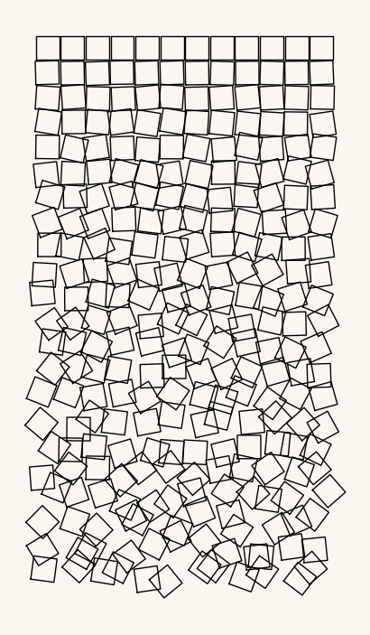
saved: assets/outputs/ch01_showpiece.png